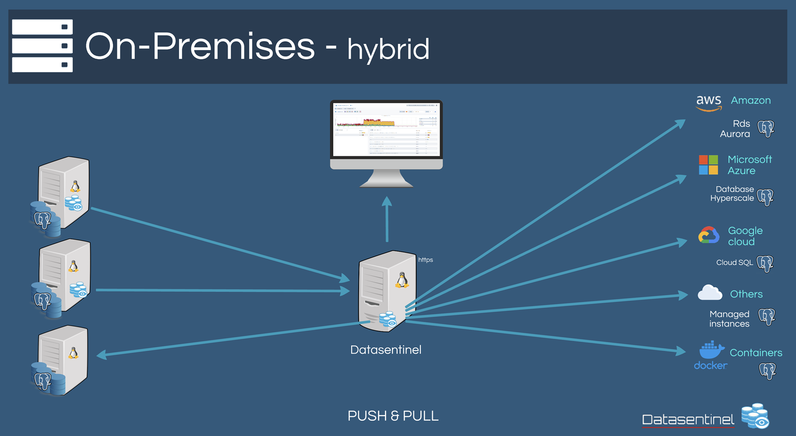

Which architecture to choose?¶
Note
The platform is made up of several components
- PostgreSQL target Prerequisites
Version >= 9.4
Extension pg_stat_statements (See Extensions)
1. On-Premises Architecture¶
To install the On-premises platform, it is preferable to have a dedicated machine running on Linux Centos 7+ or equivalent.
You can also deploy several platforms if needed.
The size of the machine will depend on the number of instances to monitor and the retention period.
See our Frequently asked questions
Default recommendation:
Instances |
CPUs |
Memory |
Storage |
|---|---|---|---|
1-25 |
4 |
16GB |
50GB |
25-50 |
8 |
32GB |
100GB |
51-100 |
8 |
64GB |
200GB |
101-150 |
16 |
64GB |
350GB |
>151 |
32 |
128GB |
500GB |
You can use either the Agent-based or AgentLess or both methods to load metrics. See Agent-based or Agentless?
Hybrid architecture example
{kind=link}
Note
2. Saas Architecture¶
Note
With this method, you need to install agents to upload the metrics. See Agent installation
The agents can be configured to pass through a proxy server
Note
{kind=link}
Note